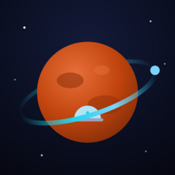
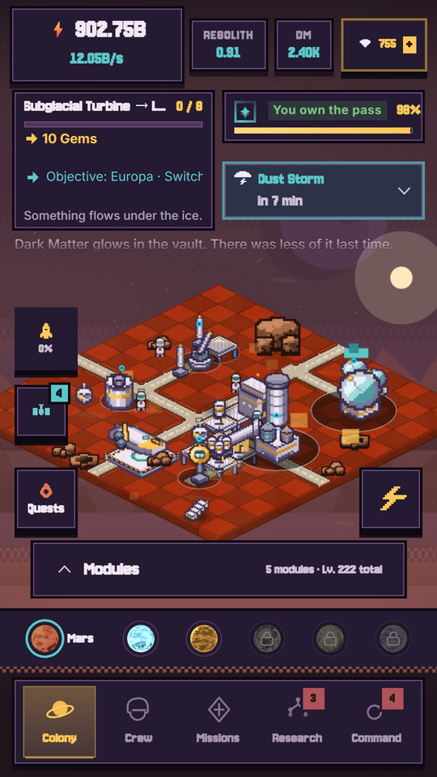
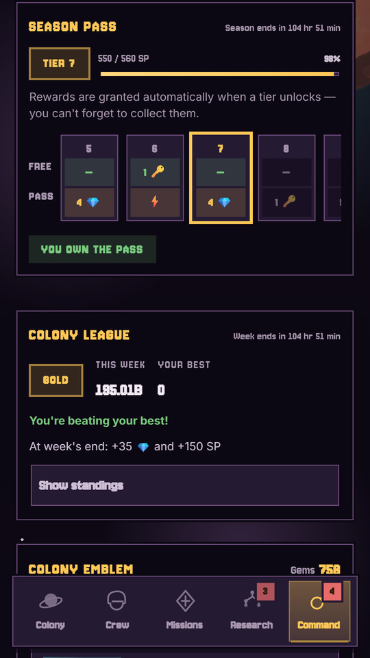
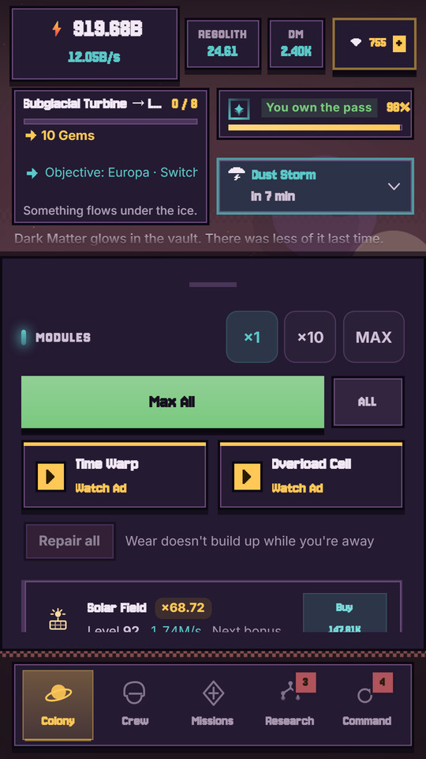
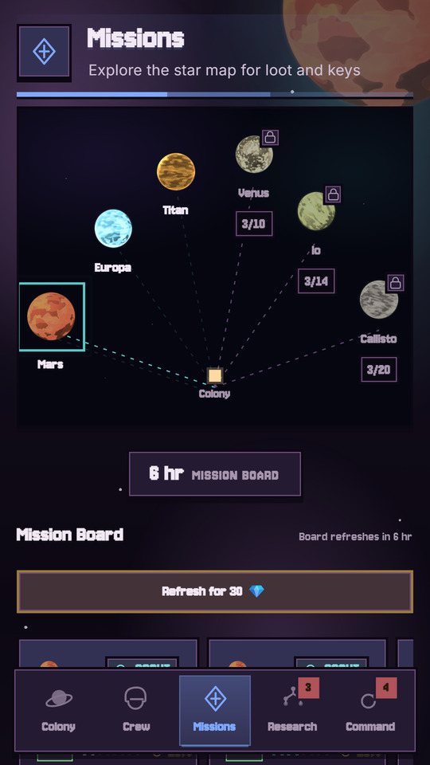
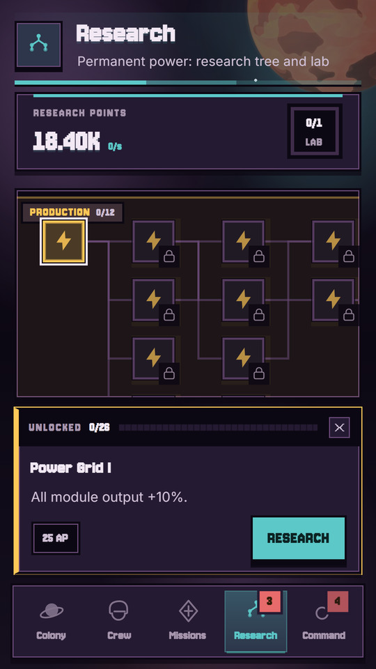
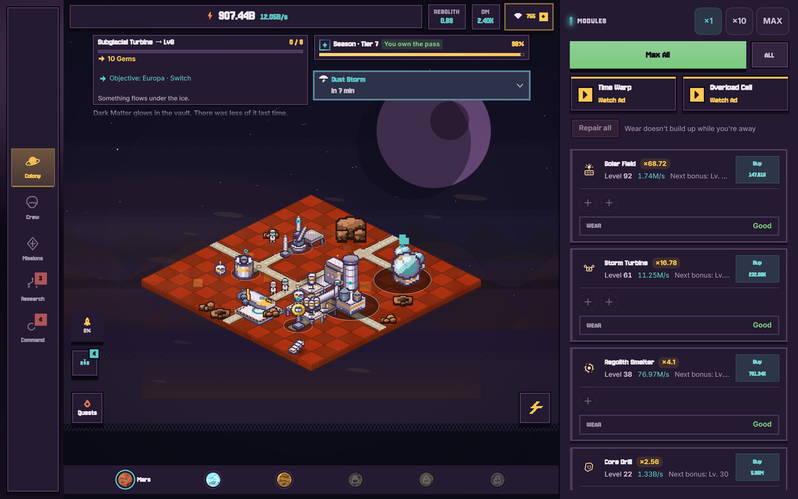
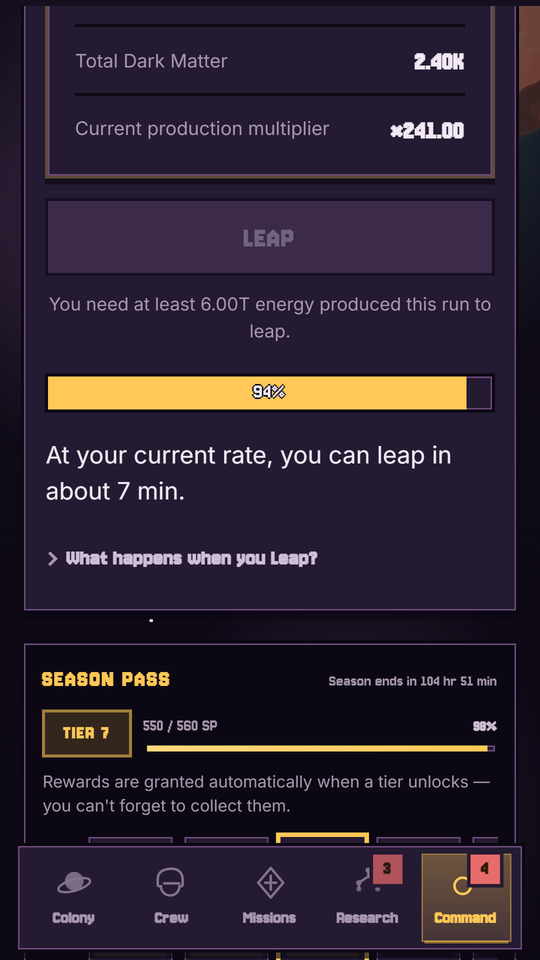
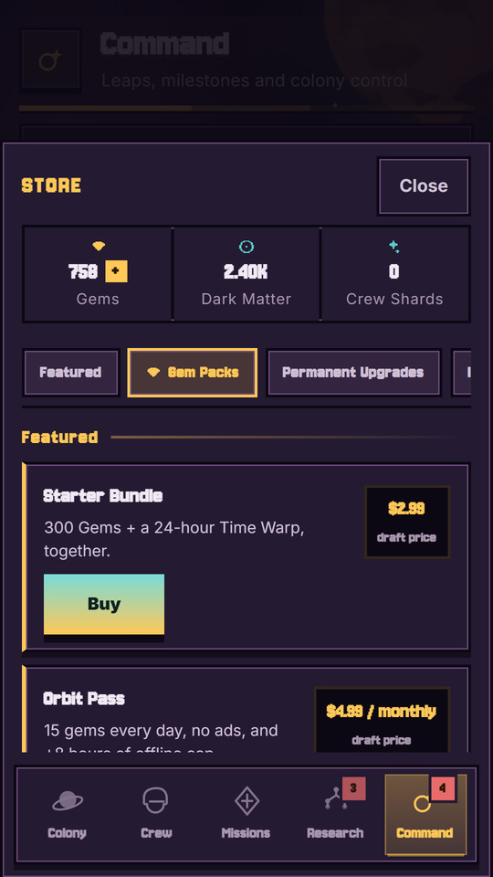
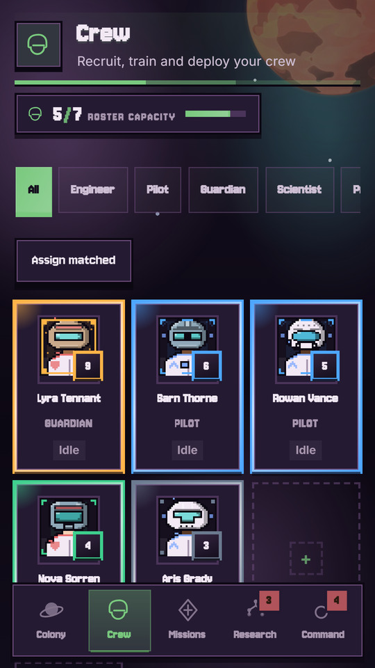

A pixel-art idle colony builder across six worlds — built for phones, tablets and foldables.
Android + iOS sim-shipFree to play, no pay-to-winEN · TR · JASolo developer — ShaumneGames
You land on Mars with one solar field and a skeleton crew. A few hours later the lights never go out.


Build modules → produce → boost or go offline → send crew on missions → research → unlock the next world → Prestige.




Three layout modes: phone portrait, tablet (≥600 dp) with a persistent buildings panel, and dock/landscape (≥900 dp) with a left rail, the scene and a right panel. Resizable activity, no orientation lock on tablets, iPad native target.
| Platforms | Google Play (phone, tablet, foldable) and App Store (iPhone, iPad) — simultaneous launch |
|---|---|
| Status | Closed test on Google Play since 28 Aug 2026; TestFlight build in testing |
| Target launch | Mid-September 2026, right after the closed-test period |
| Desired featuring | From early November 2026 (Indie Games Corner / New Games) |
| Languages | English, Turkish, Japanese at launch; Spanish, Portuguese (BR), German planned |
| Markets | Türkiye, United States, United Kingdom, Japan first; worldwide availability |
| Monetization | Free + IAP (13 products, 3 entitlements incl. a subscription) + optional rewarded ads |
| Live ops | Seasons every 2–4 weeks with Play Promotional Content and Apple In-App Events; reviews answered within 24 h |


ShaumneGames — solo developer studio (Emrecan Çetinkaya), no outside investment. Everything from engine to pixel art, localisation and store assets is in-house, with a heavy automated test and accessibility pipeline so a one-person team can ship like a studio.
Thank you for considering Space Colony: Idle for featuring.
